Welcome to my portfolio
Gabriel Brun
Hello, I'm
Gabriel BRUN
I firmly believe that there is no such thing as perfection, therefore I always try to do better knowing that I can improve myself infinitely.

My Experience
Education
2013 — Present
Highschool (Alongside Middle school and Elementary school)
Since my childhood, I have always studied at LFRD. It is a school that teaches the French curriculum but that also has a very lively atmosphere whether it's in or outside of classrooms while keeping respectful behaviors. It is also highly regarded for its academic excellence in Cambodia demonstrating that it is a competitive environment where being at the top of a class isn't easy.
Continuously placing in the top 10% of my class.
Scoring in the top 5% of the school in the Middle School Exams in 9th Grade and getting the highest possible honors for having an overall average of over 90%.
Focus and Competencies
Studying in a competitive, bilingual environment has sharpened my adaptability, time management, and critical thinking skills. I excel at balancing demanding coursework with independent projects and team collaborations. By thriving in this environment, I have developed a strong analytical mindset with a particular focus on mathematics, and physics, while keeping and maintaining high academic standards, and still being able to express creativity and passion through extracurriculars and personal projects.
Highlights
- Average of 18.5/20 in 10th grade which corresponds to a GPA of 4.0/4.0
- Continuously being one of if not the best student in my class
- Scoring in the top 5% of the school in the Middle School Exams in 9th Grade and getting the highest possible honors for having an overall average of over 90%.
- Successfully navigating the French curriculum while operating smoothly in a multicultural environment and finding cultural identity.
- Balancing curriculums with extracurricular commitments, showing time management mastery.
— Part of the BFI program, an international bacalauréat for french students
— Part of the MUN Workshop team
— Part of my school's Science Club
— Played rugby for more than 10 years as an extracurricular activity
— Future involvment in the Aeronautical Initiation Certificate (Brevet d'Initiation Aéronautique)
Work & Internships
Internship at CamTech University
Internship where I worked on two distinct projects: making an arduino based Bi-Copter made for stabilisation and the production of a portfolio website (that you are looking at right now). Additionally had to make a report on the internship and a presentation about said internship in order to demonstrate growth.
Succesfully completed both projects in the given timeframe and received positive feedback.
What I did
During this internship, I worked on my two projects daily in the robotics room, the Bi-Copter and the portfolio website, overcoming various challenges as I progressed on these projects. I had to learn how to use Arduino and its programming language in order to make the Bi-Copter functional and stable. I also had to learn how to use HTML, CSS, and JavaScript in order to make the portfolio website functional and visually appealing. Near the end of my internship, I was writing my report and making a presentation about my internship in order to demonstrate my growth and learning during the internship. I additionally participated in some of CamTech's classes, particularly on software engineering and robotics where I could observe the functioning of a University class, I participated in corporate meetings where I could observe the way the CamTech team organizes their weekly reports on progress, demonstrating the way a coordinated team works in a professional environment.
Key achievements
- TBD................................................
This internship was a valuable opportunity to apply my academic knowledge in a real-world setting and contribute to meaningful projects and also to learn the operational dynamics of a skilled professional environment through meetings and classes.
Internship at GERES
GERES is an NGO acting for climate solidarity, notably in the sector of energy efficiency.
Completed the internship smoothly with distinction, receiving positive feedback from supervisors and colleagues.
What I did
During this first internship, I was introduced to the profesional world and environment, assisting to my first corporate meetings and learning how to work in a profesional team. There I was interacting with the entire team, working together with them and incorporating myself with them. I had multiple tasks which mostly involved enhancing the organization of the NGO. I also participated in field deployments to a textile factory where I was able to observe the operations of the facility and the contribution of the NGO in the means of a corporate meeting.
Key achievements
- Positive feedback from supervisors and colleagues
- Succesfully impacted the NGO by improving their organizational assets
- Recognized for my exceptional attitude during my internship
Thanks to this internship, which was my first interaction with a professional environment, I was able to learn how to work in a professional setting and how to interact with a team of professionals. I was also able to learn how to work in a professional environment and how to interact with a team of professionals. I was also able to understand the importance of collaboration and communication in a professional setting. This internship was extremely valuable in shaping my trajectory by providing me with more knowledge of what profesional role I want and don't want to pursue.
Commitments
Athlete — Rugby and other sports
Constant dedication towards competitive sports, particularly rugby, while balancing academic responsibilities. Served as team captain and vice-captain, leading the team to a podium finish at an Asia-Pacific tournament.
Worked alongside the rugby team to lead us to a podium finish at an Asia-Pacific tournament.
The commitment
I've done rugby for more than 10 years now, training 2 times a week (relative to the year and coach), participated in multiple regional and foreign tournaments. This dedication that I show particularly towards rugby but also for sports in general represents my discipline and [find noun to represent spending time] towards my passion and work. Rugby is particularly more special because it teaches things that other sports just can't: It teaches humblness because of xxx, it teaches solidarity for when your teamates lose hope, it teaches you xxx.
Highlights
- Podium finish at Asia-Pacific tournament
- Served as Team Captain and Vice-Captain
- Balancing sport life with a full academic load
- Built resilience, discipline, and team leadership under pressure
- Winner of the school Triathlon in the Highschool division in 2026
Sports and athletic tournaments teaches you things no classroom can.
I learnt most importantly to accept loss and failure not as an ending but as a stepping stone towards growth and learn from my worst mistakes. I also learnt to be humble by showing empathy and understanding towards teamates and opponents, to be resilient in defeat by always standing back up, stronger than before, to be a leader when needed especially when my team needed disciplining and guidance, to be a team player when needed, to be disciplined in training and on the field, to be focused in competition, to be strategic in play, to be respectful towards opponents and referees, and much more. All of these skills and lessons learnt from sports are applicable to my life and work and I remain grateful for the opportunity to have been able to learn them through sports.
Model United Nations — Delegate & Workshop Member
Represented countries in simulated UN committees leading debates and defending my delegation's stance.
Succesfuly convincing all my committees in all conferences to vote for my resolution.
Participated in the succesful completion and organization of a school hosted conference.
My role
I first started as a photographer for my school's conference where I got to implement my amateur skills for photography. In 9th grade I registered to join the MUN workshop and was selected out of 40 others. Participated in a multitude of conferences as a delegate reprensenting different countries in high-pressure diplomatic simulations of debates. After officially being part of my school's MUN Workshop, I joined the finance team in 10th grade where my participation in budget managing lead to a successful conference with a respected budget.
Highlights
- Learnt the art of argumentation and negotiation against other eloquent delegates
- Trained new delegates in argumentation and negotiation
- Represented multiple countries on complex geopolitical issues
MUN has taught me to think critically and communicate effectively in high-pressure situations. While I initially struggled with public speaking, I learned to articulate my ideas clearly and persuasively under time constraints and learnt to remain open-minded to different perspectives.
Highschool Science Club
This Science Club is a school club that allows students to explore and experiment with various scientific concepts and phenomena. It provides a platform for students to engage in hands-on learning experiences, fostering curiosity.
Participated in designing and conducting various science experiments. Participated multiple times in the school's annual Science Fair.
The role
Worked alongside fellow students to succesfuly achieve multiple scientific experiments.
Experiments include: simple chemical reactions, and physics demonstrations. Currently working on a multiyear project for a scaled-down model of different types of renewable energies.
Highlights
- Designed and conducted various science experiments
- Multiple participation in the school's annual Science Fair
- Collaborated with peers to achieve successful experimental outcomes
- Constant engagement towards projects, demonstrating commitment.
Developed further my scientific experimentation planning, and scientific knowledge and skills through hands-on experimentation.
Ecological Representative (Eco-Délégué)
As an Eco-Délégué, I am responsible for promoting and implementing sustainable practices within my school community. This includes organizing events, raising awareness about environmental issues, and collaborating with students and staff to create a more eco-friendly environment.
Demonstrated strong initiative in promoting environmental sustainability within my school community.
The role
Helping the eco-team achieve many projects for our school's future and ecological involvement such as participating in the school's annual charity fair. Currently working on removing plastic within the school grounds as a multiple year project.
Highlights
- Ensuring a safe future for my school
- Communication with outside organizations to build partnerships as donors
- Participating multiple times in the school's annual charity fair
- Participating in the no-plastic campaign project of our school
Opened my eyes further on the importance of climate solidarity and ecological responsibility. Learnt how to effectively communicate and advocate for environmental causes and solidarity.
Skills
Verbal Languages
CommunicationFluent in multiple languages (C1 and above: French, English). Comfortable having conversations in all listed languages.
Programming & Tools
Software DevelopmentSoftware development experience with modern frameworks and programming languages. Comfortable with the use of Artificial Intelligence tools for productivity and development.
I have reached quarter-finals of an international programming competition (named "Algoréa") using Python.
Coded several websites using HTML, CSS, and JavaScript. Some being part of school curriculum, and others for personal projects.
Collaboration, Coordination & Organizer
Team DynamicsI don't need to have the official title of leader to be the person who keeps the team focused. Whether it's in competitive sports, MUN debates, or team projects, I am the coordinator and pace-setter. This shows my comfort in leading and informal leading while keeping a team focused on a goal.
Skills built on Hobbies and Passions
Versatile skill setAmateur photographer with a keen eye for detail and composition. Specialized for natural landscape photography. Participated in multiple photography contests and reached the finals.
Projects
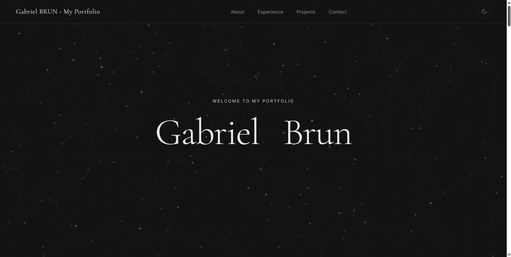
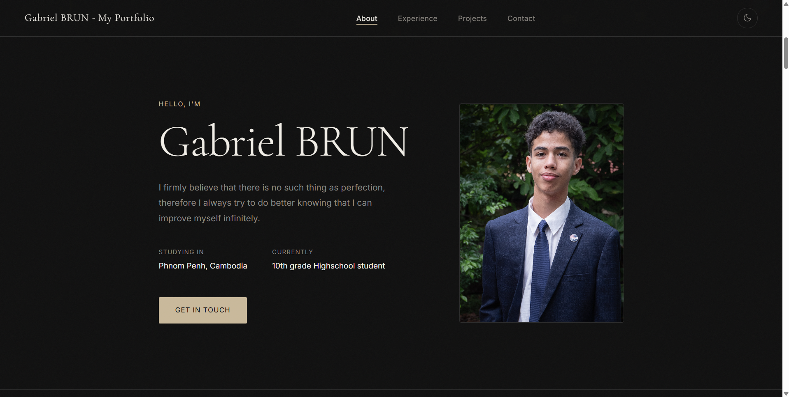
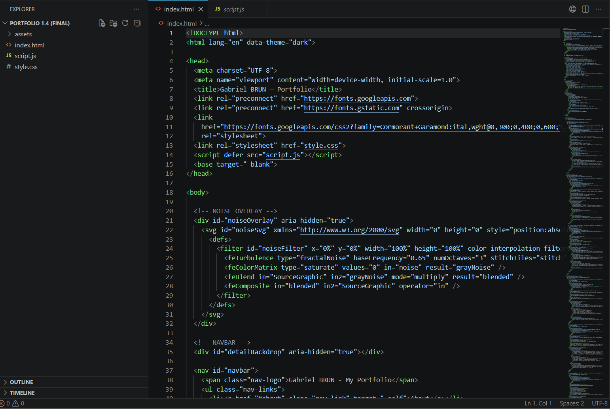
Portfolio Website Development
This project was part of my internship at CamTech University but I was planning on developing a portfolio website regardless of the internship. This project involved the development of a personal portfolio website to showcase my skills, experiences, and projects. The website was built using HTML, CSS, and JavaScript, with a focus on responsive design and user experience. It serves as a platform to present my work and achievements in a professional manner.
The reason
This project was under the framework of my internship at CamTech University. However, I had planned to develop such a website for future reference and professional use.
What I built
- Developed a responsive personal portfolio website. Increasing my web development experience.
- Implemented a modern UI with smooth animations and transitions
- Created a seamless user experience with intuitive navigation
Received positive feedback from peers and mentors for the design and functionality of the website. The website effectively showcases my skills, experiences, and projects, serving as a professional platform for future opportunities.
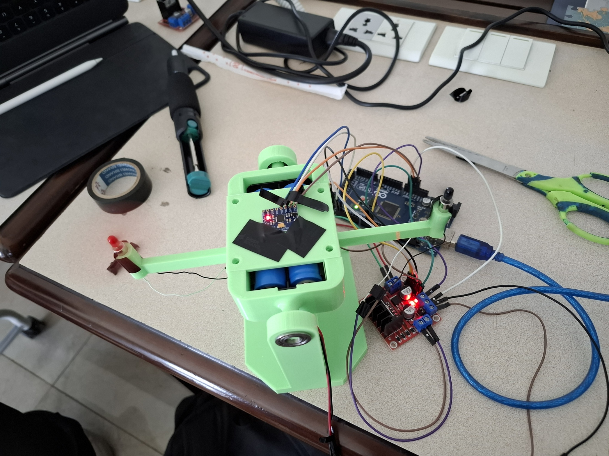
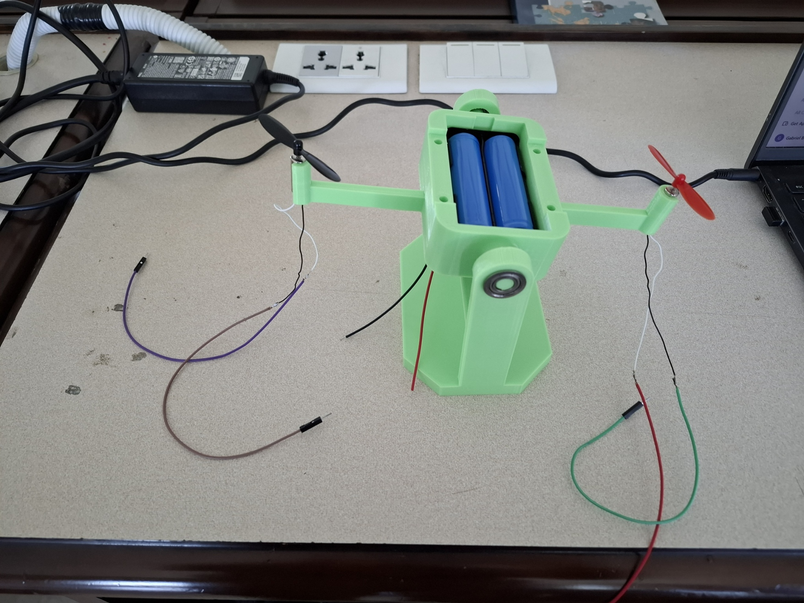

Arduino based Bi-Copter stabilisation experiment
This project was part of my internship at CamTech University. The goal was to stabilise a Bi-Copter arm using an Arduino, a gyroscope and motors. The project involved programming the Arduino to read data from the gyroscope and adjust the motors accordingly to maintain stability.
The reason
This project was under the framework of my internship at CamTech University. It was a valuable experience that allowed me to enhance my knowledge and skills in the field of robotics.
What I built
- Programmed Arduino to read data from gyroscope
- After constant debugging and testing, successfully stabilised the bi-copter arm with a time of about 2 seconds for stabilization.
This experiment and project helped me gain hands-on experience with robotics, especially with arduino. This project also required acute problem solving skills which this project helped me develop even further due to constant needing to fix issues.
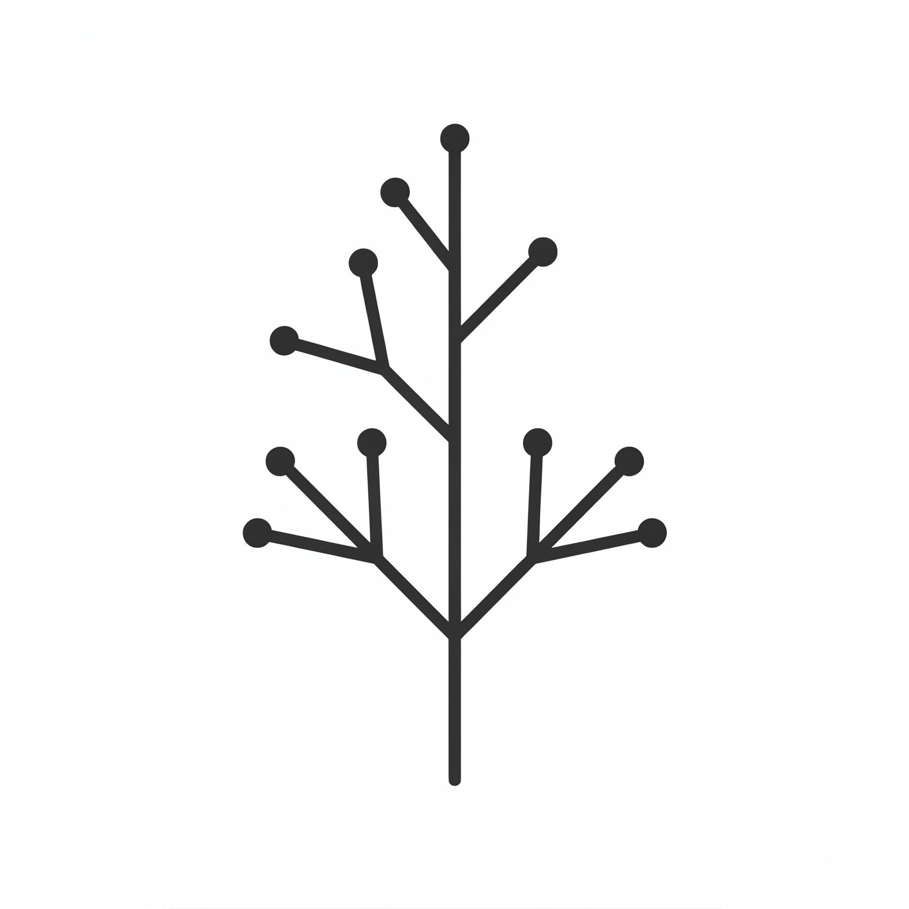
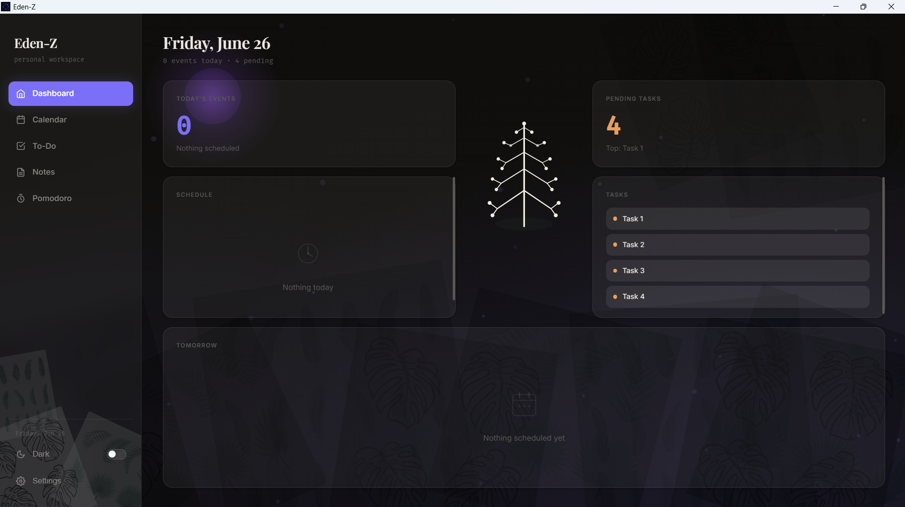
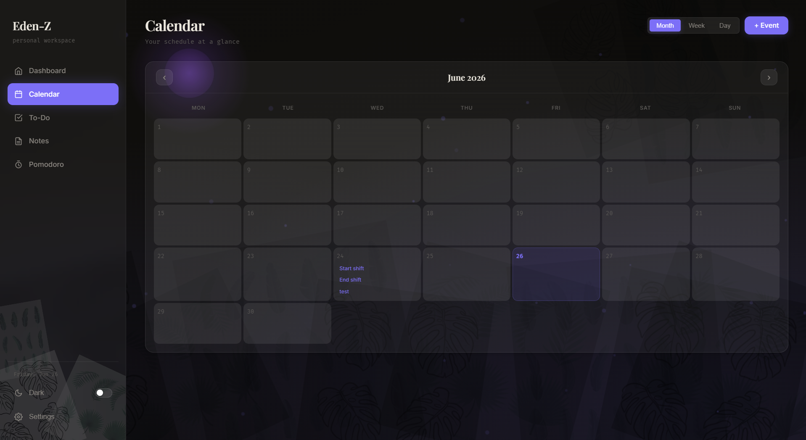
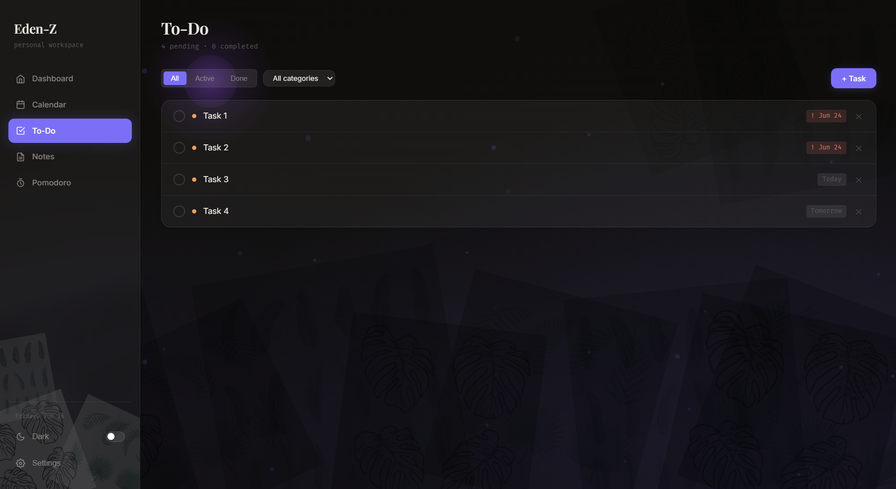
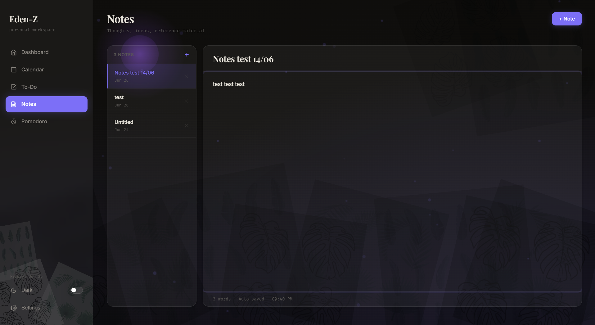
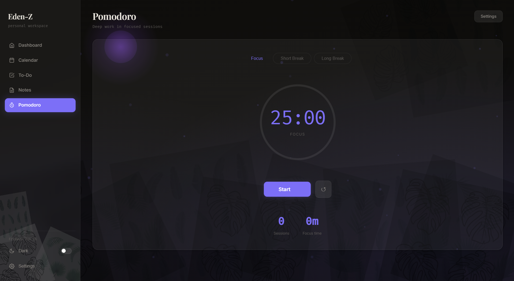
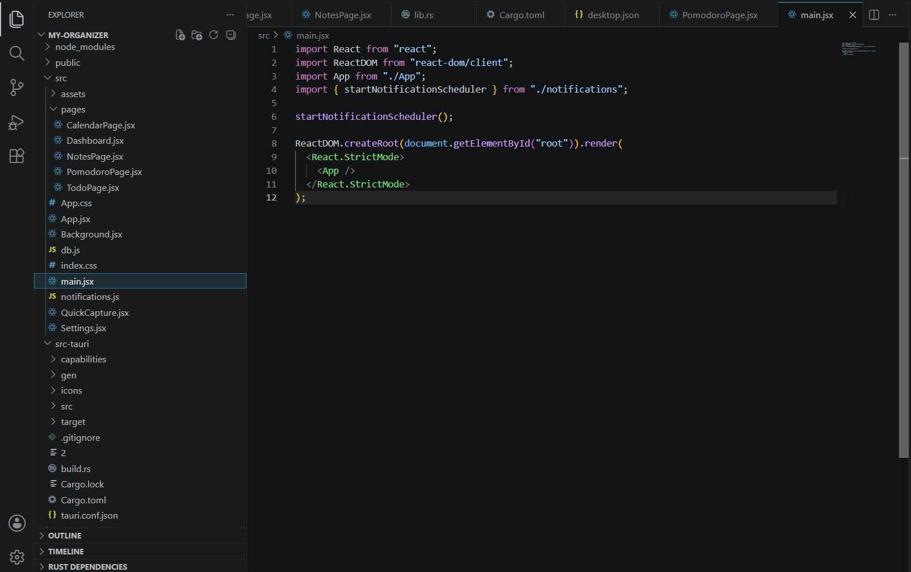
Eden-Z
This project is an application that I made, with calendar, tasks and notes management to keep the user organized and productive.
The reason
I felt that many people that I know (including me) were lacking of proper organization and time-management tools, and the existing solutions didn't meet my needs for a more efficient and user-friendly experience. So I decided to build my own so that I can customize it to fit my requirements to become both the user and the developer.
What I built
- An application that regroups calendar, tasks, and notes management alongside other management tools with a user-friendly and cozy interface.
- Currently locally-hosted for testing and development purposes, but planning on releasing it when meeting standards.
- An application that I made alongside assistance of AI. Code that can be easily maintained.
The project is still in progress but showing promising results. I am currently using it for personal organization despite beta phase and design issues.
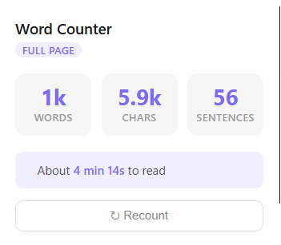
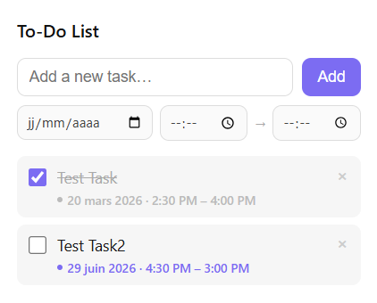
Chrome Extension Development
I made, for now, two locally-hosted Chrome extensions for the pleasure of having and developping them. I simply thought that simple tools were lacking online and I wanted to make them myself somewhere that was easily accessible.
The reason
I felt that I was lacking tools during day-to-day tasks. Tools that are so simple but that I did not possess. I therefore decided to make them myself, for fun, since it was a simple task.
What I built
- Word Counter extension — Counts words, characters and sentences in a full page or in a selected amount of text. Predicts time of reading.
- To-Do List extension — the hard part
It simply provided some functionalities I was missing, improving my workflow and efficiency.
Contact
If you have any questions or remarks, do not hesitate to contact me, it would be my pleasure to answer you!